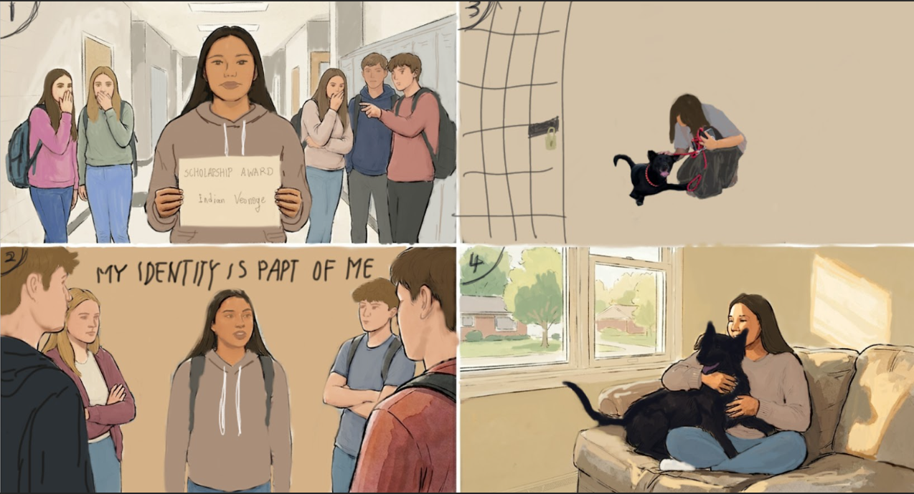

Nadine
Nadine
My dog: Story

Indian was a student at an American public high school. She was born in Indiana, and had lived there her whole life. She loves to play basketball, swim, and spend time with her family. Even though her name was Indian, and it’s also part of her indigenous identity, she’s always proud of who she is.
Indian’s student days were very fulfilling, but painful. She worked hard in every class, studied for tests, She always tried her best. One year, the school gave her a scholarship for her excellent performance on her grades. Indian felt thankful, but some students didn’t understand. They whispered things when she walked by. “ She only gets special treatment because she’s ‘Indian’” “That’s unfair! I can paint myself black too!” Indian heard their words, but she didn’t feel ashamed of who she was. She knew that everyone had different experiences and different stories. Still, hearing those comment again and again hurt her feelings.
After school, Indian liked spending time with Tiga, her dog. Tiga had soft black fur and always wagged her tail when Indian came home. Tiga was adopted from the shelter. When Indian first saw Tiga, she immediately noticed her bright eyes and wagging tail. A worker at the shelter smiled and said,”Tiga is a very cheerful and energetic dog, but she doesn't get along with other dogs very well.The other dogs often pick on her.” Indian looked at Tiga quietly. She felt a strange familiar feeling inside her heart. Bella seemed a lot like her.
Sometimes Indian also feel misunderstood by others. Sometimes people judge her before getting to know her. Indian smiled softly and thought about one of the shelter workers had said: “Adopting her can make your life more interesting, and you will have a new family that loves you back the way you love her” Without waiting any longer, she turned to the worker and said,”I want to adopt her.” From that day, Tiga became part of Indian’s family.
One day at school, some classmates started making fun of her in the hallway. “Maybe you should go back to your village and do your hunting things hahahahaha” “Yea! Stop stealing our resource” Indian felt sad and angry, but she stood up straight and looked at them confidently. “My identity is part of me. I didn’t choose where I was born or my family history. I work hard for what I earn. Everyone has something special about them, and no one should feel bad about who they are.” she said with tears running in her eyes. The hallway became quiet. Some students looked down because they realized their mistake. After this event, Indian became even more confident. She understood something important: every one has their own special qualities and experiences. Instead of hiding who she was, she proudly stood for herself, her family, and her identity.
When she went home that day, Tiga ran toward her happily with her tail wagging.Indian hugged her and smiled. She knew they both belonged exactly where they were.
THE END.